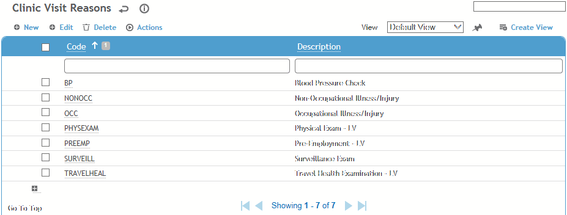
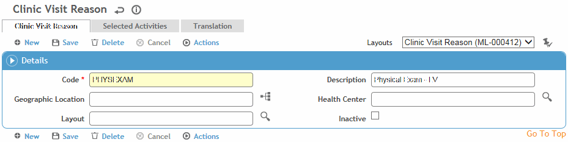

This table allows you to define the reasons for scheduling clinic visits and to associate medical tests, questionnaires and courses with that visit reason. When the reason for the visit is entered in the Details tab of the Clinic Visits form, the related activities are automatically attached to the record and can be viewed/opened in the Exam Components tab.
To filter the list of records, enter a few characters in one or more of the fields at the top followed by an asterisk, then press Enter.

Click a link to open a reason, or click New to define a new reason and its activities.

Enter the Code and a Description for the clinic reason.
Select the Geographic Location and Health Center.
To have picklists for this table only show values corresponding to the user’s geographic location, ensure the Filter Look-up Tables by Geographic Location system setting is enabled.
Select the layout to be used when this reason is chosen; if left blank, the default layout will be used.
To assign activities to this visit reason, click New on the Selected Activities tab and choose an activity (from the ScheduleActivity table).
Click Save.